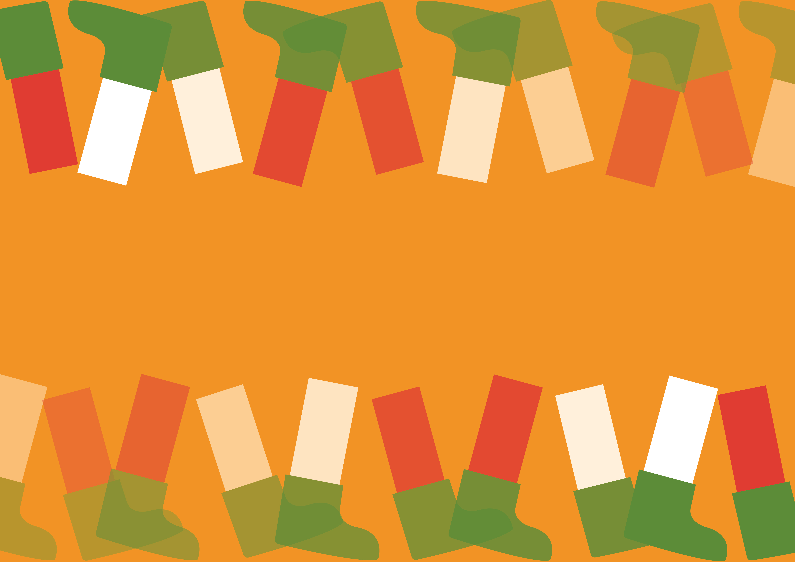
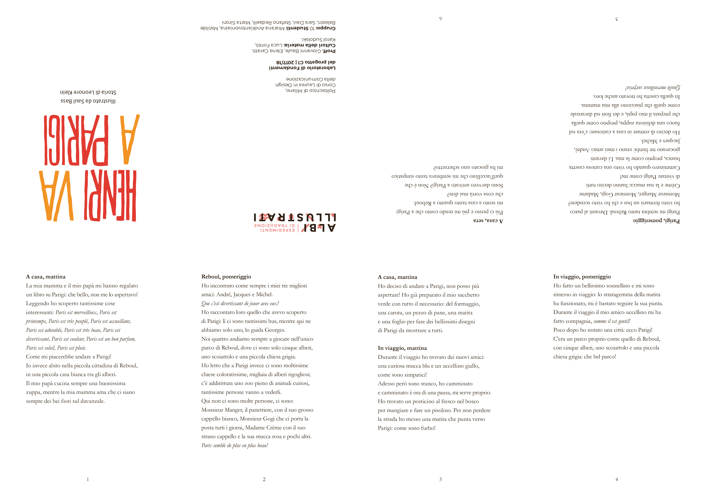

Copertina del volume Henri va a Parigi, Corraini Edizioni
Timone del volume Henri va a Parigi
Booklet di analisi dell'albo
Copertina alternativa per l'albo Henri va a Parigi

Pieghevole riassuntivo dei contenuti (fronte)

Pieghevole riassuntivo dei contenuti (retro)
Teaser per l'albo Henri va a Parigi
Albo illustrato Henri va a Parigi
Nel laboratorio si è lavorato sull'albo illustrato Henri va a Parigi scritto da Leonore Klein e illustrato da Saul Bass. Si è partiti da un'analisi delle diverse componenti grafiche che compongono le pagine del volume per arrivare a progettarne una copertina alternativa. Si è poi sviluppato un pieghevole che potesse riassumere i contenuti del libro, narrativamente e graficamente. Infine si è realizzato un teaser, che attraverso una carrellata verticale anticipa il viaggio del protagonista. Lo stile dell'animazione fa riferimento a quello del libro ma anche all'opera di Saul Bass nel title design.
Laboratorio di Fondamenti del Progetto Proff. G. Baule, E. Caratti A.A. 2017/2018
Progetto di: Marta Sironi, Matilde Balestri, Sara Davì, Patricia Vanz Gibellato, Miarana Andriantovoniaina